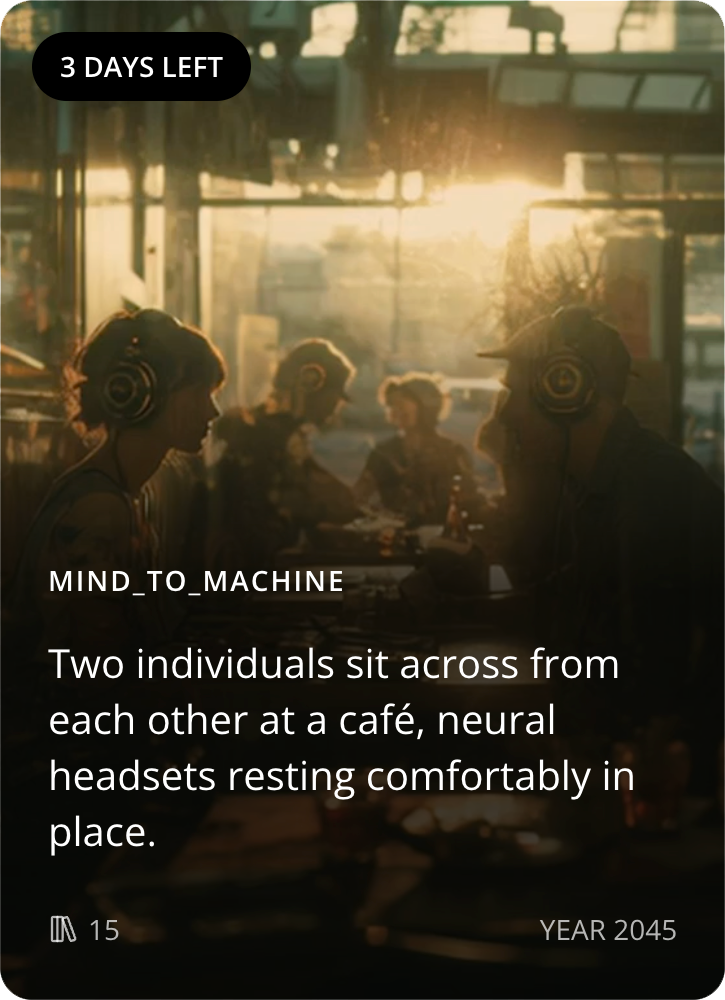
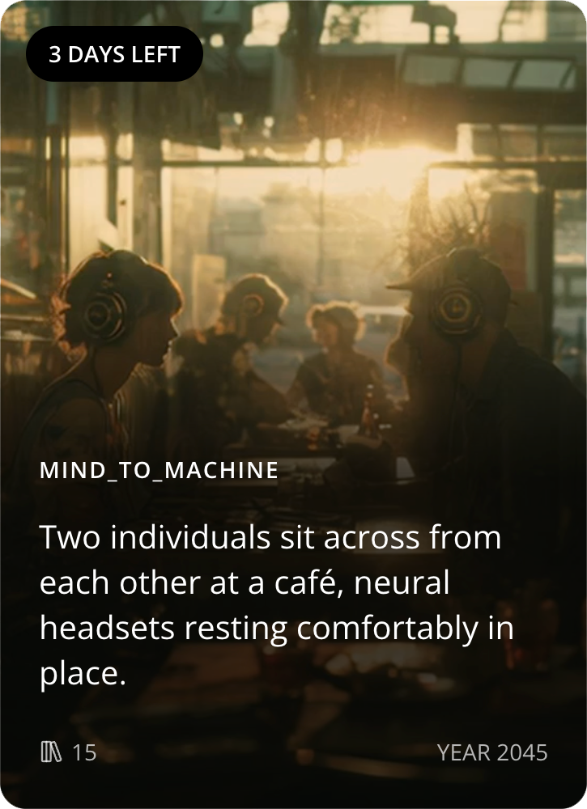

LATER TALES
A gamified platform where communities imagine technology's social futures through micro-storytelling
Claude AI
MidJourney
ChatGPT
NotebookLM
Replit
A gamified platform where communities imagine technology's social futures through micro-storytelling
We're consistently caught off guard by technology's social consequences. Traditional forecasting stays locked in corporate strategy rooms, while social media reacts to current events but provides no structured way to imagine "what if" scenarios collaboratively.
Design Goal: Create a low-barrier platform that makes speculative thinking as engaging as Wordle, while generating actionable foresight like prediction markets.

Cognitive design principles, 15+ competitive analyses, and short form fiction writing informed the product strategy
Combining familiar elements (café setting) with unfamiliar technology (neural interfaces) creates a 'cognitive itch'—the sweet spot between comfort and curiosity that drives sustained engagement.
Creativity research suggests that constraints can enhance innovation by forcing prioritization and focus.
Harvard Business Review: Why Constraints are Good for Innovation
Users encounter a tech-grounded scenario each week, write 150-character endings, and vote on likelihood—transforming individual creativity into collective intelligence.
 

Every tale pairs one emerging technology (neural interfaces, genetic editing, AR overlays) with one grounded scenario (café meetup, job interview, first date).
This constraint mirrors Black Mirror's formula: familiar enough to relate to, speculative enough to spark imagination.
Twice Weekly
Monday & Thursday 10AM
3-Day Window
Submit & vote before close
150 characters maximum. Just enough for a complete micro-story, forcing writers to distill ideas to their essence.
Users can submit up to 5 endings per tale, encouraging iteration and refinement. An AI-powered Originality Score provides instant feedback on uniqueness versus crowd patterns.
The "Generate Idea" prompt offers creative nudges for stuck writers—optional scaffolding that supports without dictating.
Higher Originality = Higher Visibility
Unique stories surface more in voting, creating incentive for creative risk-taking.

Binary voting (Likely/Unlikely) keeps decisions fast while randomized story exposure prevents groupthink
Stories appear in randomized order for each voter, ensuring diverse narratives get equal visibility regardless of submission time or early vote counts.
After voting closes, AI analyzes all submissions to surface recurring themes, concerns, and narrative patterns—revealing collective anxieties and hopes.

Example Theme Clusters:
Browse tales, read scenarios, submit endings, and explore themed results
Frictionless introduction to concept, mechanics, and first contribution


Leveraging AI tools strategically at each stage from research synthesis to prototype.
Functional prototype ready for validation
Imagine our technological futures before they arrive.